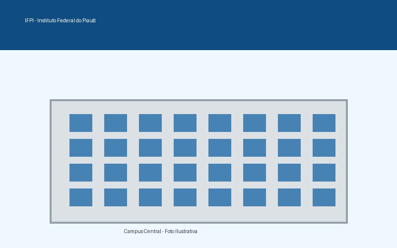
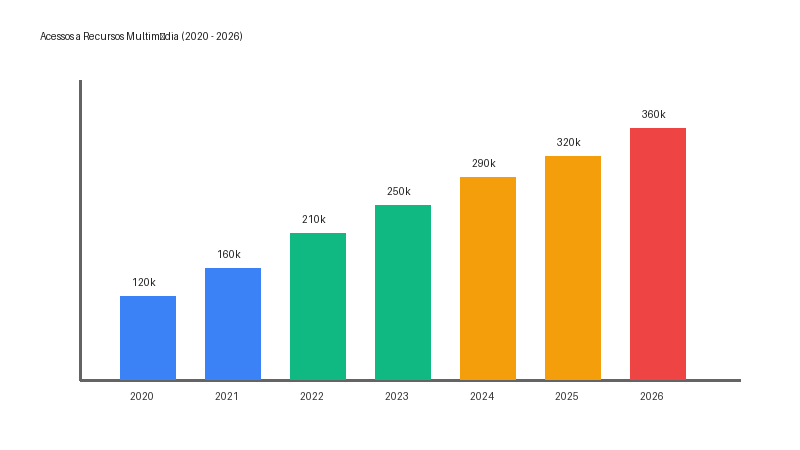

Imagens, Áudio, Vídeo e a Web Nativa
<img> e formatos clássicos: JPEG, PNG, GIF.
alt: O texto alternativo é a voz da imagem.


controls: Exibe a interface nativa do reprodutor.preload: Comportamento de buffer (none,
metadata, auto).
autoplay: Inicia a reprodução automaticamente (quando
permitido pelo navegador).
loop: Repetição contínua da faixa de áudio.<video>.width e height.
poster: A capa do vídeo antes do carregamento.<source> resolve o dilema dos codecs
(MP4/H.264, WebM/VP8, Ogg/Theora).
subtitles), audiodescrição e
transcrições (captions).
.vtt).<object> com fallback<embed>play(), pause(),
load().
volume,
currentTime, muted.
Tempo: 00:00 / 00:00
Status: Parado
| Categoria | Tags | Hospedagem | Interatividade Nativa | Uso Ideal |
|---|---|---|---|---|
| Mídia Nativa |
<img>, <audio>,
<video>
|
Servidor Próprio | Alta | Controle total e semântica web. |
| Mídia Hospedada | <iframe> |
Servidor de Terceiros | Isolada | YouTube, Maps, economia de banda. |
| Mídia Programática | <canvas> |
N/A | Via JavaScript | Gráficos dinâmicos, renderização JS. |
| Legado / Fallback | <object>, <embed> |
Servidor Próprio | Via Plugin | PDFs, Flash, suporte legado extremo. |